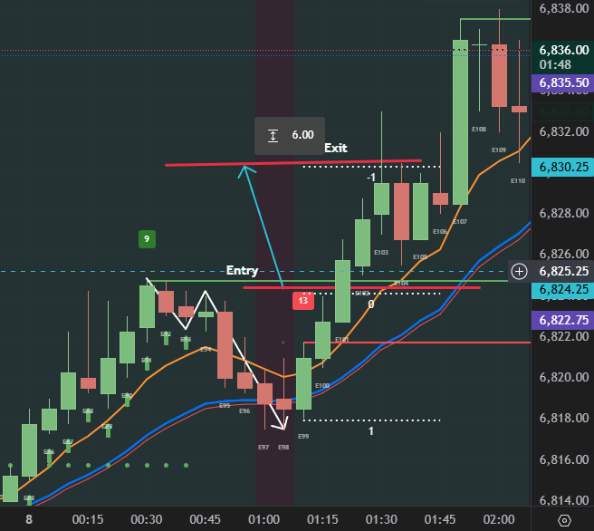

Bar-by-Bar Breakdown
Technical Logistics
Entry Logic: Buy stop 1 tick above B121 (5943.25). This ensures momentum is back on the side of the bulls before entering.
Risk Threshold: The '13' marker on the chart defines the maximum risk. The stop-loss is placed 1 tick below the signal bar low.
Value Anchor: The 20 EMA serves as the dynamic floor. In the SireMammat playbook, we only take H2 setups that align with this institutional value zone.